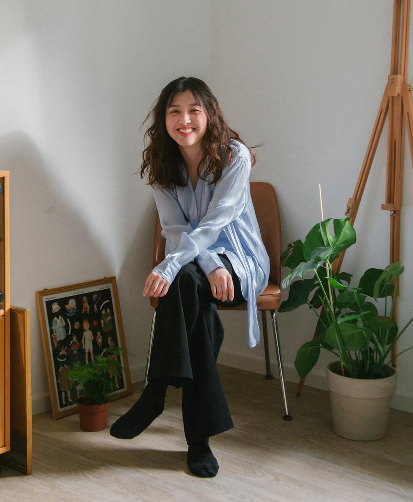

I'm Sunny, a Taiwanese girl living in Munich.
Since 2019, I've shipped ten digital products across 5 companies in Taiwan and Germany, reaching over 100 million users. The numbers are nice, but what drives me is the process, at the point where a raw, messy idea starts to become something real.
I came to design via Business Management and Human-Computer Interaction, with an entrepreneurial side that refused to stay quiet. These days I'm adding AI fluency to amplify my workflow.
I'm endlessly curious.
About technology, about how people behave, about what makes something feel inevitable once it exists.
In my spare time I enjoy doing and teaching pilates, it gives me a chance to not using laptop (you know what I'm saying 😉)

Sunny is a supportive, cheerful, positive and awesome teammate. It was a pleasure to work with Sunny. Your future team is a lucky one.
As the Product Manager, I found in Sunny a true professional who approached every stage of the product development with the right tools and the right mindset. She's always looking for the best solution, the best tools and that extra ingredient to create amazing User Experiences. She not only worked very well within the team, but even started conversations with other designers in other teams to create a network that enriched and increased the level of the cohort. I'm sure her abilities can be very valuable in any design situation she faces in the future.
Working along with Sunny was a truly enriching experience. Her expertise as an interaction designer inspired me during our time together. Beyond her professional prowess, she's an incredibly supportive friend who was always there when needed. Sunny's creativity and dedication make any team stronger.